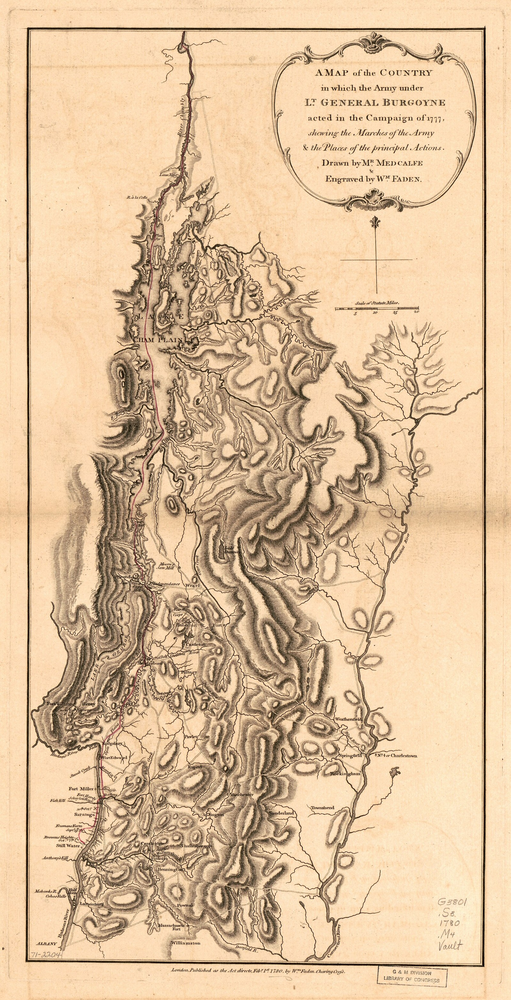

Directions: Read the address and the background note, then answer the questions.
Background. In the spring of 1778 the war was three years old. Britain was offering peace terms that met every American demand except independence, and Congress feared a tired country might accept them. Congress printed this address as a broadside on May 9, 1778, and recommended that ministers read it in churches after services. The Saratoga surrender of the previous October had already brought the French alliance of February 1778. The army Congress was asking the country to keep supporting was coming out of its Valley Forge winter.
"FRIENDS AND COUNTRYMEN, THREE years have now passed away, since the commencement of the present war. ... WE were then quite defenceless. Without arms, without ammunition, without cloathing, without ships, without money, without officers Skilled in war; with no other reliance but the bravery of our people, and the justice of our cause. We had to contend with a nation great in arts and in arms, whose fleets covered the ocean, whose banners had waved in triumph thro' every quarter of the globe. However unequal this contest our weakness was still farther increased by the enemies which America had nourished in her bosom. Thus exposed, on the one hand, to external force and internal divisions; on the other, to be compelled to drink of the bitter cup of slavery, and to go sorrowing all our lives long; in this sad alternative, we chose the former."
Source: Continental Congress, Address of the Congress to the Inhabitants of the United States, May 9, 1778, as carried in the audited TPSP bank record (Gilder Lehrman Institute). The cut between the two quoted passages is marked with an ellipsis.

1. List four things Congress says the United States began the war without, and state the two reliances Congress names in their place. Then state, in Congress's own closing image, the choice it says Americans made, and what the alternative would have meant.
2. Congress admits a weakness inside the country itself. Quote or closely state what it admits about enemies and divisions, and explain why an address meant to rally a country would print that admission instead of hiding it. Use the background note in your answer.
3. Put these in order and give each date: Burgoyne surrenders at Saratoga, France signs the Treaty of Alliance, Congress prints this address, Washington recrosses the Delaware to Trenton, Cornwallis surrenders at Yorktown.
4. A student writes that the address proves the war was already won by May 1778. Test the claim against this lesson's record. Name two dated facts, one from before and one from after May 1778, that the claim leaves out, and state what each one shows about the war the address was still trying to hold together.
1. The lacks, the reliances, and the choice. Any four of the six Congress lists: without arms, without ammunition, without cloathing, without ships, without money, without officers skilled in war. The two reliances are the bravery of our people and the justice of our cause. In the closing image, Americans were exposed on one side to external force and internal divisions and on the other to being compelled to drink of the bitter cup of slavery and go sorrowing all their lives long, and in this sad alternative, we chose the former: they chose the war over submission, which Congress names slavery. (Blueprint 7)
2. The admission, and why print it. Congress admits that its weakness was increased by the enemies which America had nourished in her bosom, and speaks of internal divisions alongside external force. An address printed to hold a country to independence while Britain offered every lesser demand had to name the danger it was answering: Loyalists within, and waverers tempted by the offered terms, were the audience as much as the convinced were. Naming the division let Congress frame the choice as it does at the close, war or the bitter cup of slavery, with no third option of a comfortable reunion left standing. (Blueprint 7)
3. Put the five events in order, with dates. Washington recrosses the Delaware to Trenton, Christmas night, December 25 to 26, 1776. Burgoyne surrenders at Saratoga, October 17, 1777. France signs the Treaty of Alliance, February 6, 1778. Congress prints this address, May 9, 1778. Cornwallis surrenders at Yorktown, October 19, 1781. (Blueprint 7, Blueprint 8)
4. Test the claim that the war was already won by May 1778. Any two dated facts, one from each side of the date, accurately used. Before: the Valley Forge winter of 1777 and 1778 was still being paid for as Congress wrote, some two thousand men dead of disease, hunger, and exposure by the estimate the lesson states, and the army that walked out in June had yet to fight at Monmouth; a won war does not need its army talked out of dissolving. After: Charleston fell in May 1780 with an entire American army, the worst American defeat of the war, and a second army was destroyed at Camden that August, three campaigning years after the address. The address was an instrument for holding the war together at a fragile moment, not a report of a finished one, and Congress's own admission of enemies in the country's bosom, in Question 2, is part of the same record. (Blueprint 8)
Teacher note. This check is formative. Question 2 is the one to read closely: a student who treats the enemies passage as an embarrassment Congress failed to hide has missed how the address works, since the admission is the reason the closing choice is stated as starkly as it is. Question 4 separates students who can test a victory claim against dates on both sides of it from students who treat the alliance as the war's ending.